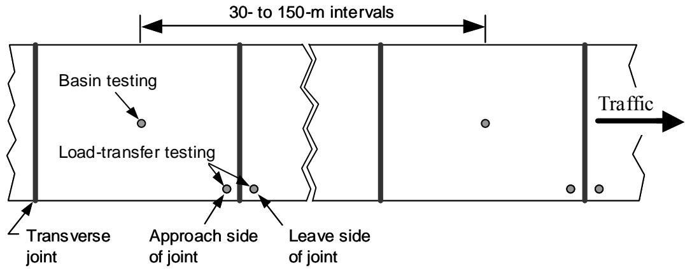
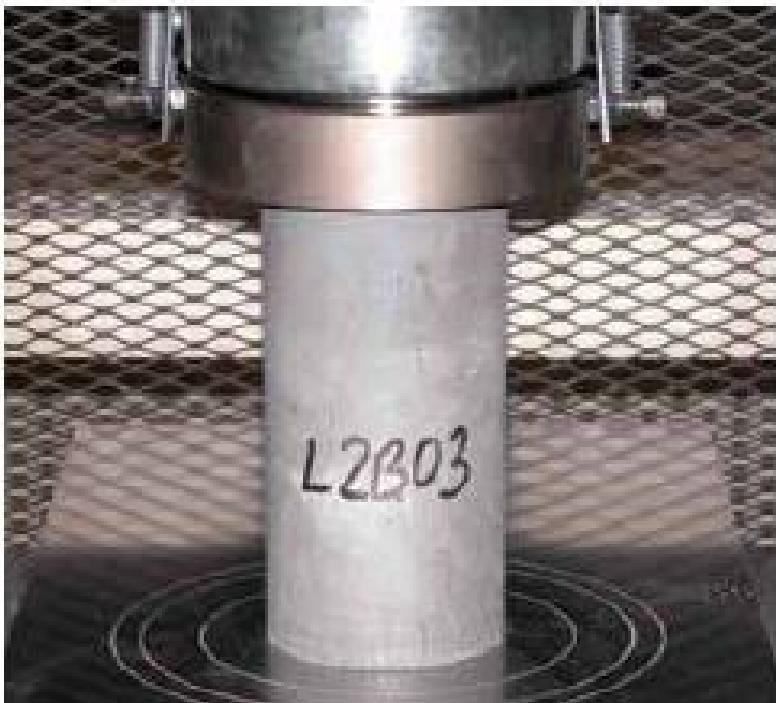
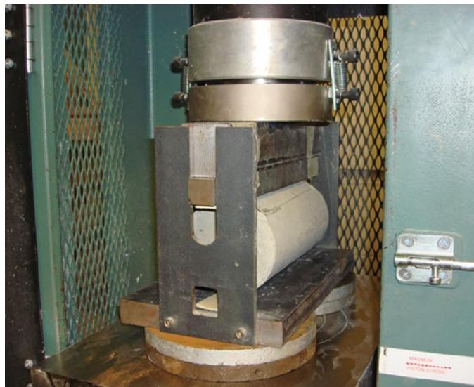
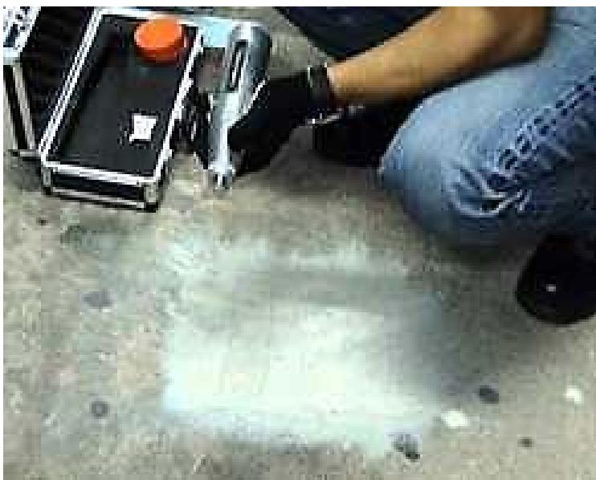
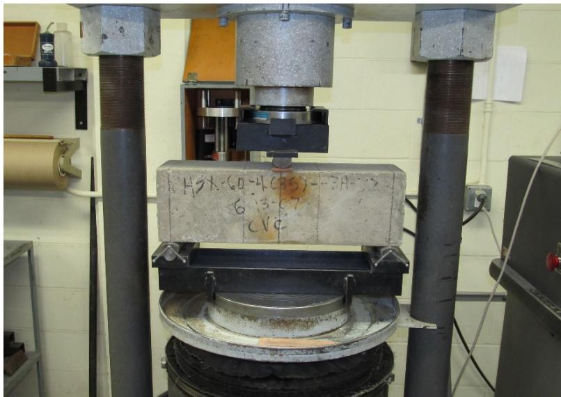
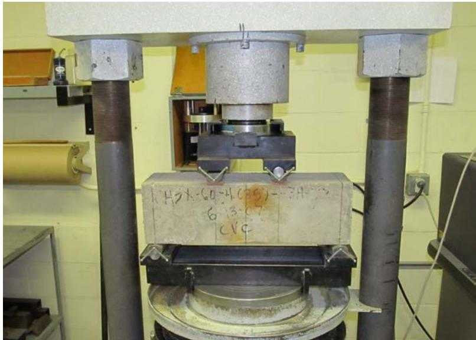
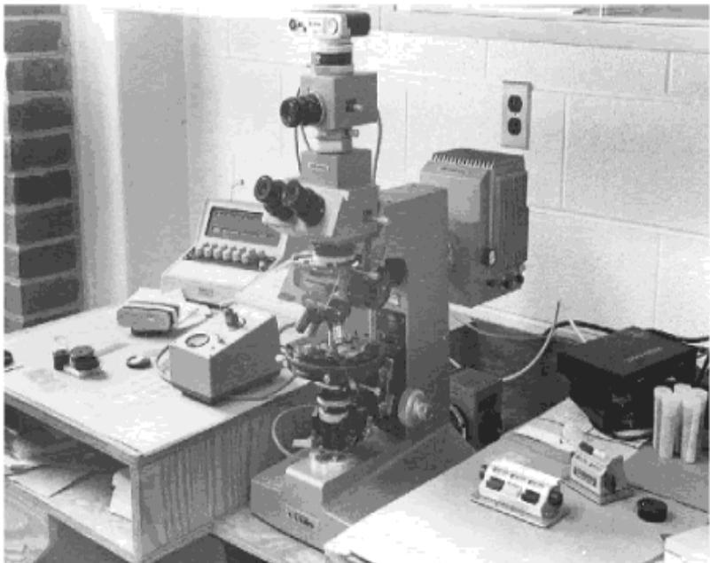

Concrete Testing Procedures
Concrete testing procedures are standardized methods applied throughout mixing, placing, curing and service life to evaluate and control the material properties of hardened concrete and its aggregates, thereby ensuring compliance with mix‑design requirements and preventing distress such as cracking or spalling [1][3]. They quantify key performance indicators—including compressive strength (ASTM C39/AASHTO T 22), flexural strength (AASHTO T 97), tensile capacity (ASTM C496), elastic modulus (ASTM C469), durability factors such as abrasion, freeze‑thaw resistance and chloride penetration, and aggregate quality via petrographic examination—providing data that locate deficient zones and validate field measurements [1][2][4][5]. Test results are judged against acceptance limits (e.g., ≥27.5 MPa compressive strength, ≥4.1 MPa flexural strength, modulus within 3–6 million psi) and, when outside these bounds, trigger corrective actions and inform predictions of long‑term performance because higher stiffness and durability are linked to reduced cracking, spalling, and other material‑related distresses [4][5][7].
CP Tech Center Guides reports covering “Concrete Testing Procedures” also include the following subtopics: Concrete Maturity Strength Prediction, Concrete Tensile Strength Testing, Concrete Workability Testing Methods, and Thermal Expansion Measurement.
Concrete Testing Procedures incorporate Concrete Workability Testing Methods to evaluate fresh mix consistency and ensure proper consolidation before placement. [1][4] The process utilizes Concrete Tensile Strength Testing to quantify the material’s resistance to traffic-induced bending, while Thermal Expansion Measurement determines the coefficient of thermal expansion for accurate stress prediction in pavement design. [1][6][8] These physical property assessments are complemented by Concrete Maturity Strength Prediction, which estimates early-age strength development through embedded temperature sensors to manage cracking risks during the first 72 hours. [1][6]
Sources (9)
Sub-concepts (4)
Purpose and quality objectives
The concrete testing procedures described across the guides are used to evaluate and control the material properties of hardened concrete and its aggregates. They assess strength characteristics—including compressive strength (“evaluates the compressive strength performance characteristic of concrete” – ASTM C39/AASHTO T 22), flexural strength (minimum 4.1 MPa at 28 days using T 97, and measured by simple‑beam methods such as ASTM C78), and tensile capacity via indirect splitting tension (ASTM C496). They also determine stiffness and deformation behavior (“elastic modulus (stiffness) governing deflection and load distribution” and “static modulus of elasticity and Poisson’s ratio” – ASTM C469). Wear and durability are examined through abrasion resistance tests (“abrasion or wear resistance of both aggregates and hardened concrete,” Los Angeles test, ASTM C779/C944), freeze‑thaw durability (ASTM C666), chloride ion penetration (ASTM C1202), water absorption (ASTM C1585), and early‑age chemical reactions (“early‑age aluminate reactions that control initial stiffening and potential cracking” – ASTM C359/AASHTO T‑185). Aggregate quality is verified by bulk density, grading, specific gravity, moisture content, void content, air content, and soundness (“bulk density, grading, moisture content, air content, workability (slump), compressive strength, flexural strength, durability against freeze‑thaw cycles, resistance to abrasion and impact, soundness, alkali reactivity, and chemical composition”), using methods such as ASTM C29, C127, C128, C143, C231, and petrographic examination (“examines aggregate and paste quality … focusing on their tendency to develop cracking, spalling, scaling, delamination and other distress mechanisms” – ASTM C295/C856). Together these standardized tests provide data that control mix‑design compliance, locate deficient zones (e.g., via rebound‑number testing), validate field deflection measurements, and ensure the concrete will meet structural and service performance requirements in pavement and airfield applications. [1][2][3][4][5][6][7]
The following figure illustrates the recommended deflection testing locations for jointed concrete pavements.

Recommended deflection testing locations for jointed concrete pavements. [7]The figure illustrates a schematic layout of a jointed concrete pavement, indicating specific points where basin and load-transfer tests are conducted to evaluate structural performance. Testing locations include the mid-slab and at the slab corner (with the load plate placed as close as possible to the corner of the slab) for void detection.
[1] — Ch. 3 (pp. 57–137), Ch. 6 (p. 171); [2] — App. A (pp. 372–373); [3] — Ch. 7 (p. 113); [4] — Strength (p. 10); [5] — Ch. 19 (pp. 478–496); [6] — Ch. 3 (pp. 68–72); [7] — Ch. 3 (p. 68)
Concrete testing procedures are applied to verify that concrete satisfies essential performance limits that prevent distress such as cracking, spalling, or premature failure. The tests address quality requirements for strength, stiffness, tensile capacity, abrasion resistance, and aggregate integrity so that potential material‑related distresses (MRDs) can be identified before they cause premature pavement failure.
The elastic modulus must lie within the design envelope of 3 million to 6 million lb/in² so the pavement can properly distribute traffic loads; values outside this range indicate the material may not meet required stiffness criteria. Elastic‑modulus testing per ASTM C469 validates that “elastic modulus testing is sometimes conducted on concrete core samples to help validate FWD results,” and, as noted in a preservation reference, it “addresses the quality requirement of ensuring structural adequacy and prevents potential problems such as design errors or premature distress caused by inaccurate stiffness data.”
Flexural strength is measured at 28 days with ASTM T 97 and must reach at least 4.1 MPa (600 psi), while compressive strength is measured at 28 days with ASTM T 22 and must be no less than 27.5 MPa (4,000 psi). The cylinder compressive‑strength test (ASTM C39/AASHTO T 22) verifies that the material attains the specified strength needed to prevent cracked or shattered slabs under load; failure to meet these thresholds would trigger corrective actions such as mix redesign or additional curing.
The rebound‑hammer test (ASTM C805) determines whether zones of weakness or cracking are present, allowing inspectors to locate areas of inadequate concrete and estimate compressive strength. The indirect tensile strength test defined in ASTM C496 quantifies the material’s ability to resist tension; by loading the core until it splits, the resulting σt value reveals whether “the concrete can maintain its integrity under environmental or chemical stresses that cause material‑related distresses such as cracking, scaling, or spalling.”
Petrographic examination of aggregates (ASTM C295/C295M) screens for deleterious mineral reactions and other characteristics that could cause cracking, spalling, scaling, delamination or related distresses. Abrasion resistance tests confirm that wear loss does not exceed project‑specified limits, thereby protecting the surface from excessive material loss that would otherwise cause cracking or spalling; the abrasion‑resistance test (ASTM C779/C779M) assesses whether horizontal surfaces possess sufficient wear resistance to avoid premature surface loss. [1][4][5][6][7]
The figure below illustrates how compressive strength and aggregate type influence the abrasion resistance of concrete as determined by ASTM C1138.
 Effect of compressive strength and aggregate type on the abrasion resistance of concrete using ASTM C1138 [1]
Effect of compressive strength and aggregate type on the abrasion resistance of concrete using ASTM C1138 [1]
The figure plots abrasion-erosion loss as a percentage by mass against compressive strength, demonstrating that higher compressive strength correlates with lower material loss. Four distinct aggregate types are compared: Limestone, Quartzite, Traprock, and Chert, showing that siliceous aggregates like Quartzite and Chert exhibit significantly better abrasion resistance than calcareous aggregates like Limestone. This data supports the principle that aggregate quality is a general indicator of durability, as using an aggregate with low abrasion resistance can increase fines and water requirements in concrete mixtures.
[1] — Ch. 3 (pp. 57–137), Ch. 6 (p. 171); [4] — Strength (p. 10); [5] — Ch. 19 (pp. 478–495); [6] — Ch. 3 (pp. 68–72); [7] — Ch. 3 (p. 68)
Scope and applicability
The concrete testing procedures described in the various ASTM methods are applicable to all constituents of concrete pavement systems—including Portland‑type concrete and the aggregates incorporated into those mixes, fine and coarse aggregates, hydraulic cements (both plain and blended), supplementary cementitious materials such as fly ash or pozzolans, and chemical admixtures. They address both fresh and hardened concrete: fresh‑mix properties such as slump, air content, temperature, moisture, and sampling practices are evaluated, while hardened‑product properties include compressive strength of cylinders, flexural strength of beams, density, absorption, voids, thickness measured with drilled cores, resistance to rapid freezing‑thawing, chloride‑ion penetration, water absorption rate, air‑void system, and elastic modulus. The procedures are employed throughout mixing, placing, curing, core extraction, laboratory analysis, and performance‑verification stages, and they extend to pavement performance monitoring through surface roughness and longitudinal/transverse profile measurements.
Specific tests are matched to particular pavement components and distress conditions: the rebound‑number test (ASTM C805) is used on hardened concrete surfaces such as slabs, bridge decks, or hydraulic structures where cracking, scaling, or spalling is suspected; the indirect tensile (splitting) test (ASTM C496) and the elastic‑modulus test (ASTM C469) are applied to core samples taken from existing pavement slabs for overlay design, stiffness validation, or assessment of tensile capacity; abrasion‑resistance tests (ASTM C418, C779, C944, C1138) evaluate durability of horizontal concrete elements against traffic‑induced wear, impact loading, and wet abrasion; petrographic examination of aggregates (ASTM C295/C295M) is performed on any aggregate intended for use or on cores from existing structures to detect deleterious reactions.
Strength acceptance criteria are defined by project specifications: a minimum flexural strength of 4.1 MPa at 28 days (test method T 97) and/or a minimum compressive strength of 27.5 MPa at 28 days (test method T 22) may be required, with agencies permitted to select either or both criteria. [1][2][3][4][5][6][7]
[1] — Ch. 3 (p. 57), Ch. 6 (p. 171); [2] — App. A (pp. 372–373); [3] — Ch. 7 (p. 113); [4] — Strength (p. 10); [5] — Ch. 19 (pp. 478–496); [6] — Ch. 3 (pp. 68–72); [7] — Ch. 3 (p. 68)
Concrete testing is required when the project specifications call for meeting the minimum flexural strength of 4.1 MPa at 28 days using test T‑97 or the minimum compressive strength of 27.5 MPa at 28 days using test T‑22; these values constitute the baseline acceptance criteria. Concrete compressive‑strength testing according to ASTM C39/AASHTO T 22 is required when a roadway’s concrete must demonstrate that it meets the specified strength before traffic is allowed; the test provides a direct measure of the in‑situ material’s ability to resist cracking or spalling. Agencies may elect to only require either flexural strength or compressive strength, making the other optional. The procedure is not presented as optional or inappropriate for other situations, so its use outside of mandated strength verification is undefined. All acceptance decisions are governed by the criteria set out in Section 7 of AASHTO R‑101, which limits the use of these procedures to situations where the specified age, test method, and strength thresholds are applicable. Limitations include the need to obtain cylindrical specimens that conform to the jurisdiction’s sampling standards and to conduct the test on machines capable of applying standard load rates with two bearing blocks, because only then will the maximum load accurately reflect the concrete’s actual strength. [4][5]
The following figure illustrates the standard setup for this compressive-strength verification process.

Concrete cylinder undergoing compressive strength testing in a universal testing machine. [5]This setup demonstrates the procedure for determining compressive strength, where an axial load is applied to the cylinder until failure occurs.
[4] — Strength (p. 10); [5] — Ch. 19 (p. 487)
Test methods and procedures
The standardized test methods mandated by the guides include:
Abrasion‑resistance of aggregate. The Los Angeles (LA) abrasion test, performed in accordance with ASTM C131 or ASTM C535/AASHTO T 96, requires a steel drum, a measured quantity of aggregate and steel balls; the drum is rotated and the percent weight loss of the aggregate is measured.
Concrete‑specific abrasion tests. ASTM C779 provides three alternative procedures: Procedure A uses revolving steel disks with abrasive grit for sliding and scuffing; Procedure C applies a rapidly rotating ball bearing under load on a wet surface to generate high contact stresses. Portable test slabs (12 × 12 × 4 in.) are used for Procedures A and C, with Procedure A operating at 12 rpm and a 5 lbf disk load, and Procedure C using a ball‑bearing device that applies a combined 27 lbf load (motor, shaft and water) and spins at 1 000 rpm, with depth readings taken every 50 seconds until either 1 200 seconds elapse or an erosion depth of 0.1225 in. is reached. ASTM C944 abrades concrete cores with a rotating cutter under load, recording loss of mass or wear depth.
Flexural strength. AASHTO T 97 is used on specimens cured for 28 days; the minimum acceptable flexural strength is 4.1 MPa (600 psi).
Compressive strength. ASTM C39/AASHTO T 22 requires cylindrical cores extracted in accordance with local jurisdictional specifications, placed in a compression‑testing machine equipped with two bearing blocks that distribute axial load evenly. The machine must apply standard load rates; load is applied continuously until failure and the peak load is recorded as compressive strength. Minimum acceptable compressive strength for 28‑day specimens is 27.5 MPa (4 000 psi).
Surface hardness (rebound number). ASTM C805 specifies a spring‑driven hammer with a steel plunger. The plunger is held perpendicular to the hardened concrete surface and the instrument is pressed until impact; the rebound number is recorded ten times at each location and the set of readings is used to map low‑quality zones and estimate in‑situ compressive strength.
Tensile capacity (splitting tensile strength). ASTM C496 calls for cylindrical cores whose length (L) and diameter (D) are measured, then loaded vertically on their curved surface in a compression‑testing machine at a constant deformation rate of 0.05 in per minute until failure along the vertical diameter. The ultimate load (Pult) is recorded and indirect tensile strength calculated as σt = 2Pult/(πLD). [1][4][5][6]
The following figure illustrates the splitting tensile strength test setup described above.

Splitting tensile strength test setup for a concrete cylinder. [1]The figure shows a cylindrical concrete specimen positioned horizontally within a heavy-duty compression testing machine, resting on a curved support block at the bottom and loaded by a flat strip along its top surface. This apparatus demonstrates the splitting tensile strength test where loading induces tensile stresses on the plane containing the applied load, causing the cylinder to split.
[1] — Ch. 6 (p. 171); [4] — Strength (p. 10); [5] — Ch. 19 (pp. 478–495); [6] — Ch. 3 (pp. 68–72)
Valid results from ASTM C295/C295M require that a qualified petrographer conduct the microscopic examination of the aggregate sample; the excerpt does not detail specific instrument calibration procedures or environmental controls, implying those aspects are not explicitly defined here. [5]
[5] — Ch. 19 (p. 490)
Sampling and testing frequency
Concrete testing procedures determine sampling locations, quantities, and frequencies through the specific requirements of each ASTM method. Under ASTM C805, the tester positions a spring‑driven hammer perpendicular to the concrete surface at each evaluation point and records “The rebound number is recorded 10 times for each specimen.” This ten‑fold per‑point measurement provides a local strength estimate but the standard does not prescribe how many locations across a slab must be sampled or how often testing should be repeated over time. In contrast, the abrasion‑resistance test employs portable equipment, allowing samples to be taken at any horizontal concrete area where surface condition needs evaluation; “The testing equipment utilized in this test is portable, making it versatile when the locations of the concrete vary significantly.” Each sampling location is represented by a standard “Test specimens are 12 by 12 by 4 inches,” and the test records wear data at regular intervals: “Dial readings are taken every 50 seconds until either 1,200 seconds or an eroded depth of 0.1225 inches is reached.” These interval specifications establish the frequency and threshold for assessment at each sampled spot. [5]
The following figure illustrates the rebound hammer used to perform these localized strength assessments.

A technician using a rebound hammer on a concrete surface. [5]The image displays a spring-driven hammer equipped with a steel plunger being held perpendicular to the specimen’s surface by an operator wearing protective gloves. This apparatus is used in ASTM C805 to determine the rebound number of concrete, which allows for the evaluation of cracked slabs and the establishment of estimated strength areas. The procedure involves pressing the instrument until impact occurs, providing data that locates deficient zones and validates field measurements for hardened concrete.
[5] — Ch. 19 (pp. 478–495)
Representative sampling under concrete testing procedures must be performed in strict accordance with the applicable jurisdictional or ASTM/AASHTO standards so that the specimen truly reflects the material, process, lot, or completed work. For compressive‑strength evaluation a cylindrical core is extracted from the placed concrete following the project’s specified standard; this captures any in‑situ cracking or spalling and, when subjected to an axial load until failure, yields a peak load that represents the strength of that batch. For aggregate petrographic analysis the batch is represented by random samples taken per ASTM C295/C295M, with any drilled cores obtained in compliance with ASTM C42; these specimens are then examined for petrographic, chemical, physical and geological characteristics to support acceptance decisions. [5]
The following figure illustrates the process of concrete pavement coring used to obtain these representative specimens.
 Concrete pavement coring [5]
Concrete pavement coring [5]
The image shows a rotary core drill with a hollow cylindrical barrel actively cutting into the surface of concrete pavement. A stream of water is visible on the ground, indicating wet coring methods are being used to cool the bit and suppress dust during extraction. This procedure represents a method for obtaining material samples from in-situ concrete pavement for subsequent laboratory testing.
[5] — Ch. 19 (pp. 487–490)
Acceptance criteria and tolerances
The guides define acceptance of concrete by several quantitative limits. An elastic modulus is acceptable when it falls within the design envelope of roughly three to six million pounds per square inch, obtained either from direct ASTM C469 testing or via the ACI empirical relation E = 5.7×10³√f′c; values outside this range trigger corrective action. Flexural strength must reach at least 4.1 MPa (≈600 psi) after 28 days when tested according to T‑97, and compressive strength must be no less than 27.5 MPa (≈4,000 psi) after 28 days using T‑22; any result below these minima is deemed unacceptable and requires retesting per the acceptance criteria. For abrasion resistance under ASTM C779/C779M, Procedure A applies a 5 lbf load at 12 rpm while Procedure C uses a 27 lbf load on a ball bearing rotating at 1,000 rpm; the work is acceptable only if the measured erosion depth never exceeds 0.1225 inches during the prescribed 1,200‑second interval (or until that depth is reached). Exceeding any of these numerical limits signals insufficient performance and mandates corrective measures. [1][4][5]
The figure below illustrates the concrete beam central point loading test used to evaluate these structural properties.

Concrete beam central (single) point loading test [5]The image displays a concrete beam specimen positioned on two lower supports within a mechanical testing machine, with an upper plunger applying force at the center of the span. This setup corresponds to the ASTM C293/AASHTO T 177 procedure for determining flexural strength using simple beam with center-point loading, a method used to evaluate cracked or shattered slabs. The apparatus applies a load continuously at a constant rate until the beam reaches its breaking point, allowing for the calculation of the modulus of rupture.
[1] — Ch. 3 (p. 57); [4] — Strength (p. 10); [5] — Ch. 19 (pp. 493–495)
Quality control and process monitoring
To keep concrete quality consistent during production and construction the program should monitor a comprehensive set of material characteristics. The hardened‑state properties include 28‑day compressive strength and the corresponding elastic modulus – “The determination of elastic modulus is described in ASTM C469.” with the expected relationship “E = 57 000 √f′c.”; compressive strength is verified by cylinder testing (“compressive strength of cylinder specimens (ASTM C39)”) and flexural strength by beam testing (“flexural strength of beam samples (ASTM C78)”). Routine testing of both flexural and compressive strength using the prescribed T 97 and T 22 procedures, respectively, ensures that “verify that the 28‑day results meet the minimum values set out in the specification.” Additional hardened‑state checks cover density, absorption and voids (“density, absorption and voids (ASTM C642)”), rapid freezing‑thaw resistance (“resistance to rapid freezing‑thawing (ASTM C666)”), alkali‑aggregate reaction potential (“potential alkali‑aggregate reaction (ASTM C227, ASTM C1260)”), the air‑void system (“evaluate the hardened‑state air‑void system using ASTM C457”) and static modulus of elasticity and Poisson’s ratio (“testing core samples for the static modulus of elasticity and Poisson’s ratio in accordance with ASTM C‑469”). Surface durability is assessed by abrasion tests – aggregate Los Angeles abrasion (“The most common test for abrasion resistance of aggregate is the Los Angeles (LA) abrasion test (rattler method) performed in accordance with ASTM C131 or ASTM C535/AASHTO T 96,”) and concrete surface loss methods (“ASTM C418 subjects the concrete surface to airdriven silica sand, and the loss of volume of concrete is determined.”; “In ASTM C944, a rotating cutter abrades the surface of the concrete under load. Loss of mass or depth of wear is measured.”) as well as horizontal‑surface abrasion (“Abrasion Resistance of Horizontal Concrete Surfaces – ASTM C779/C779M”). In‑situ strength and distress are tracked with rebound number testing (“This test determines the rebound number of concrete to evaluate cracked slabs by the use of a spring‑driven hammer equipped with a steel plunger”; “rebound number of hardened concrete should be monitored using the ASTM C805 spring‑driven hammer test.”) and indirect tensile strength from core splitting tests (“indirect tensile strength by applying ASTM C496 on pavement cores”). Aggregate quality monitoring includes unit weight and voids (“aggregate unit weight and voids (ASTM C29)”), bulk density and void content (“bulk density and void content of aggregates (ASTM C29)”), fine‑aggregate moisture (“fine‑aggregate moisture (ASTM C70)”; “aggregate moisture (ASTM C566)”), cement chemistry (“cement chemistry (ASTM C114)”), particle size distribution (“particle size distribution (ASTM C136/C123)”), soundness (“soundness (ASTM C88)”) and abrasion resistance (“abrasion resistance (ASTM C131)”). Petrographic examination of aggregates is required (“A petrographer then examines the sample with a petrographic microscope or other eligible testing apparatus”) to detect alkali‑silica or alkali‑carbonate reactions. Fresh‑mix properties that must be continuously measured are slump (“fresh concrete slump (ASTM C143)”), temperature (“temperature (ASTM C1064)”), air content by volumetric or pressure methods (“air content by volumetric or pressure methods (ASTM C173, ASTM C231)”) and moisture (“moisture (ASTM C172)”). Durability indicators include chloride‑ion penetration resistance (“chloride‑ion penetration resistance (ASTM C1202)”), water‑absorption rate (“water‑absorption rate (ASTM C1585)”), freeze‑thaw resistance of coarse aggregate (“freeze‑thaw resistance of coarse aggregate (ASTM C1646)”) and visual inspection for cracking, spalling, scaling or delamination. When any measured value falls outside specified limits, corrective actions such as mix adjustments, admixture dosage changes, curing modifications or remedial surface treatments are implemented to restore compliance. [1][2][3][4][5][6][7]
The figure below illustrates concrete beam testing using third-point loading.

Concrete beam testing, third-point loading [5]The image displays a concrete beam specimen positioned within a mechanical testing machine for flexural strength evaluation. The apparatus utilizes third-point loading and bearing blocks to test the flexural strength of the concrete, where the load is applied continuously at a constant rate until the beam breaks.
[1] — Ch. 3 (pp. 57–137), Ch. 6 (p. 171); [2] — App. A (pp. 372–373); [3] — Ch. 7 (p. 113); [4] — Strength (p. 10); [5] — Ch. 19 (pp. 478–495); [6] — Ch. 3 (pp. 68–72); [7] — Ch. 3 (p. 68)
The guides concur that any test result that falls outside the limits defined by the applicable specification mandates a process adjustment and often additional testing. When an abrasion test shows results that exceed the limits set by the applicable specification—such as a weight‑loss percentage from the Los Angeles aggregate test that is above the prescribed upper bound—or when concrete specimens exhibit wear depths or mass losses beyond acceptable values in any of the ASTM C418, C779, C944 or C1138 procedures, the process must be adjusted and additional testing performed to verify material performance. Similarly, compressive‑strength tests on cylindrical specimens that produce a maximum load – and thus measured strength – below the project’s specified requirement signal inadequate material and trigger adjustments such as extra sampling, corrective actions, or repeat testing before traffic is permitted. Any departure from the prescribed standard load rate or bearing‑block setup during testing also warrants equipment verification and possibly repeat testing to ensure reliable results. Petrographic examination of randomly sampled aggregates, performed after sieve analysis in accordance with ASTM C42, must be scrutinized; if it reveals signs of cracking, spalling, scaling, delamination, or other material distress, or shows significant alkali‑silica or alkali‑carbonate reaction products, those findings indicate that the aggregate may be unacceptable and should trigger a review of the mix design or production process along with any necessary additional testing. When visible signs of material-related distress—such as cracking, scaling, spalling, staining or exudate, especially at joint bottoms—appear in a concrete pavement, they signal the need for further laboratory evaluation; practitioners should then conduct additional tests like the indirect tensile strength test (ASTM C496) on cores taken from the affected area and supplement those results with microstructural analyses (e.g., ASTM C457 air‑void characterization, optical microscopy or SEM) to diagnose the underlying mechanisms. These triggers collectively guide when adjustments to mix design, construction practices, or maintenance strategies are required. [1][5][6]
The following figure illustrates saturated transverse and longitudinal joints resulting from unsound aggregate.
 Concrete pavement showing spalling at saturated joints due to unsound aggregate. [5]
Concrete pavement showing spalling at saturated joints due to unsound aggregate. [5]
The image displays a concrete pavement surface with visible longitudinal and transverse cracks where the material has deteriorated along the joint lines.
[1] — Ch. 6 (p. 171); [5] — Ch. 19 (pp. 487–490); [6] — Ch. 3 (pp. 71–72)
Documentation and reporting
The procedure requires recording the sampling plan, noting that aggregates must be obtained by random sampling, and documenting any drilled‑core specimens in accordance with ASTM C42 together with their material type. The results of the sieve analysis, including the amount retained on each sieve, are entered, as are all observations from petrographic microscopy and any chemical, physical or geological investigations performed. Finally, the analyst records a formal acceptability decision based on these findings. [5]
The following figure illustrates the petrographic microscope used to conduct the microscopy observations described above.

Petrographic microscope FHWA [5]The image displays a laboratory bench setup featuring a large optical petrographic microscope equipped with binocular eyepieces and an overhead camera attachment. This apparatus is used for the petrographic examination of aggregates, which evaluates material properties to identify potential causes of distresses such as cracking or spalling in concrete mixtures.
[5] — Ch. 19 (p. 490)
Relationship to long-term performance
The elastic modulus measured by ASTM C469 or estimated with the ACI empirical formula provides a direct gauge of concrete stiffness, which controls slab deflection under traffic loads. Because stiffness strongly influences how the slab distributes those loads, values in the typical 3‑to‑6 million lb/in² range are linked to lower cracking and spalling potential and thus longer expected service life; when measured modulus falls below this range, designers may need to adjust mix design or add reinforcement to improve distress resistance. Elastic‑modulus values obtained from concrete core samples, measured in accordance with ASTM C‑469, are used to validate falling‑weight‑deflectometer (FWD) results and serve as an input for overlay design procedures; because the modulus quantifies concrete stiffness, higher measured values suggest a material that will better resist deformation‑related distress such as cracking or spalling, which in turn supports a longer expected service life. If the tested modulus is lower than required for the designed pavement structure, designers may modify mix composition or layer thickness to achieve the needed performance and durability.
Field rebound‑hammer testing (ASTM C805) provides a rapid estimate of concrete uniformity and compressive strength; low rebound numbers flag zones where the material is inadequate, indicating a higher likelihood of cracking or spalling and thus a reduced service life. The ASTM C805 rebound‑number test uses a spring‑driven hammer with a steel plunger held perpendicular to the concrete surface; ten impacts are recorded on each specimen and the average rebound number is used to locate zones of low strength. Because the rebound number provides an estimate of the in‑situ compressive strength, areas that register low values are identified as inadequate concrete, indicating a higher likelihood of cracking or spalling and therefore a reduced expected service life; conversely, higher rebound numbers suggest sufficient strength and greater resistance to distress over time.
Laboratory compression testing of extracted cylinders (ASTM C39/AASHTO T 22) yields a direct measure of the in‑place concrete’s capacity to resist distress under traffic loads; meeting the specified strength confirms sufficient durability for the intended lifespan, while sub‑specimen values trigger repair or redesign. The splitting tensile strength obtained from the ASTM C496 indirect tension test on pavement cores provides a direct gauge of the concrete’s ability to resist tensile‑related distress such as cracking, scaling or spalling; higher σt values imply that the material can maintain its integrity longer under environmental and chemical stresses, thereby extending service life.
Petrographic examination of aggregates reveals mineralogical and reactive characteristics that govern long‑term performance; detection of alkali‑silica or alkali‑carbonate reactions signals susceptibility to cracking, spalling, scaling, or delamination, which shortens functional life, whereas an aggregate free of deleterious phases predicts greater distress resistance. Abrasion‑resistance testing (ASTM C779/C779M) quantifies wear rates by plotting elapsed time against material loss; specimens that approach the maximum 1,200 seconds before reaching a 0.1225‑inch erosion depth are judged more durable and expected to maintain serviceability longer, while faster wear rates indicate the need for mix or surface‑treatment adjustments.
Visual identification of MRDs—cracking, degradation, staining, or joint bottom deterioration—signals a loss of durability and a shortened expected lifespan, prompting further laboratory investigations. [1][5][6][7]
[1] — Ch. 3 (p. 57); [5] — Ch. 19 (pp. 478–495); [6] — Ch. 3 (pp. 68–72); [7] — Ch. 3 (p. 68)
After the structure is built, additional monitoring can be performed by extracting random aggregate samples as drilled cores in accordance with ASTM C42 and subjecting them to a petrographic examination under ASTM C295/C295M. After the pavement is placed, the guide advises a systematic post‑construction monitoring program that begins with coring representative sections of the concrete. The extracted cores are subjected to static elastic‑modulus testing in accordance with ASTM C469; this direct measurement of stiffness can be compared with falling‑weight deflectometer (FWD) results and serves as an input for any subsequent overlay design calculations, ensuring that the existing pavement can support planned treatments. In parallel, the same cores are tested for indirect tensile (splitting) strength per ASTM C496, using a constant deformation rate of 0.05 in/min to obtain the concrete’s tensile capacity. After a structure is completed, the ASTM C856‑18a petrographic examination can be used as a follow‑up test by extracting hardened concrete cores or other representative samples from the built element. The laboratory analysis includes sieve‑size distribution, optical microscopy, scanning electron microscopy, X‑ray diffraction and related chemical techniques to identify any cracking, spalling, scaling, delamination or signs of alkali‑silica/alkali‑carbonate reactions that may have developed in service. After construction, engineers may perform elastic‑modulus testing on cores taken from the finished pavement. If material‑related distress such as cracking, scaling, or spalling is observed, the protocol expands to include detailed laboratory analyses: optical microscopy and air‑void characterization (ASTM C457) to quantify void size and spacing, scanning electron microscopy with energy‑dispersive spectroscopy for microstructural examination, analytical chemistry to determine w/cm ratio and chloride content, and X‑ray diffraction to identify any deleterious reaction products. These follow‑up tests verify whether the concrete’s mechanical properties or its micro‑chemical condition are contributing to observed distress and provide the data needed to plan appropriate remedial actions. [5][6][7]
[5] — Ch. 19 (pp. 490–496); [6] — Ch. 3 (pp. 71–72); [7] — Ch. 3 (p. 68)
Related Concepts
- Concrete Maturity Strength Prediction
- Concrete Tensile Strength Testing
- Concrete Workability Testing Methods
- Thermal Expansion Measurement
References
- P. Taylor, T. Van Dam, L. Sutter, and G. Fick, "Integrated Materials and Construction Practices for Concrete Pavement: A State-of-the-Practice Manual," National Concrete Pavement Technology Center, Rep. Part of InTrans Project 13-482; TPF-5(286), 2019. [Online]. Available: https://www.cptechcenter.org/wp-content/uploads/2019/12/IMCP_manual.pdf
- T. L. Cavalline, G. Voigt, J. Stempihar, J. Lafrenz, T. Van Dam, M. Boyle, D. Johnson, and Rohan Reddy Jonna, "Best Practices Manual: Quality Control and Quality Acceptance of Concrete Airport Pavement," University of North Carolina at Charlotte, Rep. ACPTP-2022-4, 2025. [Online]. Available: https://www.cptechcenter.org/wp-content/uploads/2026/03/ACPTP-2022-4_QC_QA_of_concrete_airfield_pvmt_manual_w_cvr_508.pdf
- T. L. Cavalline, G. J. Fick, and A. Innis, "Quality Control for Concrete Paving: A Tool for Agency and Industry," National Concrete Pavement Technology Center, 2021. [Online]. Available: https://www.cptechcenter.org/wp-content/uploads/2021/12/QC_for_concrete_paving_web.pdf
- T. Van Dam and P. Taylor, "Commentary on AASHTO R 101, Developing Performance Engineered Concrete Pavement Mixtures," National Concrete Pavement Technology Center, 2024. [Online]. Available: https://www.cptechcenter.org/wp-content/uploads/2024/06/commentary_on_AASHTO_R_101_manual_web.pdf
- D. Harrington, M. Ayers, T. Cackler, G. Fick, D. Schwartz, K. Smith, M. B. Snyder, and T. Van Dam, "Guide for Concrete Pavement Distress Assessments and Solutions: Identification, Causes, Prevention, and Repair," National Concrete Pavement Technology Center, 2018. [Online]. Available: https://www.cptechcenter.org/wp-content/uploads/2019/01/concrete_pvmt_distress_assessments_and_solutions_guide_w_cvr.pdf
- K. Smith, M. Grogg, P. Ram, K. Smith, and D. Harrington, "Concrete Pavement Preservation Guide (Third Edition)," National Concrete Pavement Technology Center, 2022. [Online]. Available: https://www.cptechcenter.org/wp-content/uploads/2022/08/concrete_pvmt_preservation_guide_3rd_edition_web.pdf
- K. D. Smith, T. E. Hoerner, and D. G. Peshkin, "Concrete Pavement Preservation Workshop," National Concrete Pavement Technology Center, 2008. [Online]. Available: https://www.cptechcenter.org/wp-content/uploads/2018/08/preservation_reference_manual.pdf
- H. N. Torres, J. Roesler, R. O. Rasmussen, and D. Harrington, "Guide to the Design of Concrete Overlays Using Existing Methodologies," National Concrete Pavement Technology Center, Rep. DTFH61-06-H-00011; Work Plan 13, 2012. [Online]. Available: https://www.cptechcenter.org/wp-content/uploads/2018/08/Overlays_Design_Guide_508.pdf
- J. Gross and W. Adaska, "Guide to Cement-Stabilized Subgrade Soils," National Concrete Pavement Technology Center, Iowa State University, Rep. PCA Special Report SR1007P, 2020. [Online]. Available: https://www.cptechcenter.org/wp-content/uploads/2020/05/guide_to_CSS.pdf